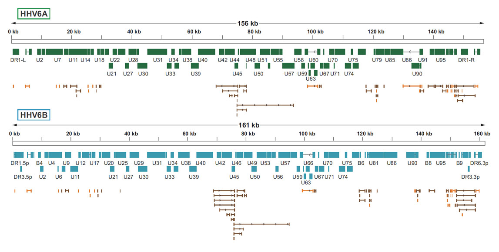

Comparative genomic analysis of herpesviruses using HHV6-GLUE
HHV6-GLUE is a data resource designed to facilitate comparative analysis of herpesvirus genomes. It was created using the GLUE software environment.
The HHV6-GLUE project not only contains data items required for comparative genomic analysis - i.e. virus genome sequences, multiple sequence alignments, genome feature annotations, and other sequence-associated data - but also, loading the project into the GLUE software framework creates a relational database that represents the semantic relationships between these data items. This creates powerful framework for performing standardised comparative analysis, via GLUE's command layer.
HHV6 reference sequences
HHV6-GLUE contains reference sequences for all known herpesvirus species. Reference sequences are linked to auxiliary data in tabular format.
For each herpesviral genus, we have created a 'master' reference sequence, as follows:
Herpesviruses genome features
Herpesviruses have enveloped, spherical virions and a small, circular DNA genome ~3 kilobases (Kb) in length. The genome is characterised by a highly streamlined organization incorporating extensive gene overlap - the open reading frame (ORF) encoding the viral polymerase (P) protein occupies most of the genome and typically overlaps at least one of the ORFs encoding the core (C), and surface (S) proteins.

In this project, a standard set of HHV6 genome features described by Finkel et al, (2020)) has been used. The coordinates of these features have been mapped to master reference sequences (see here).
Phylogenetic trees
We used GLUE to implement an automated process for deriving midpoint rooted, annotated trees for both HHV6A and HHV6B. (see here).
Project-specific schema extensions
HHV6-GLUE extends GLUE's core schema through the incorporation of a number of additional fields in the sequence table, and a project-specific custom table: 'isolate'. These schema extensions are defined here. The isolate table is linked to the main 'sequence' table via the sequence ID field. It contains information pertaining to viral isolates, e.g. species sampled, date and location of sample.